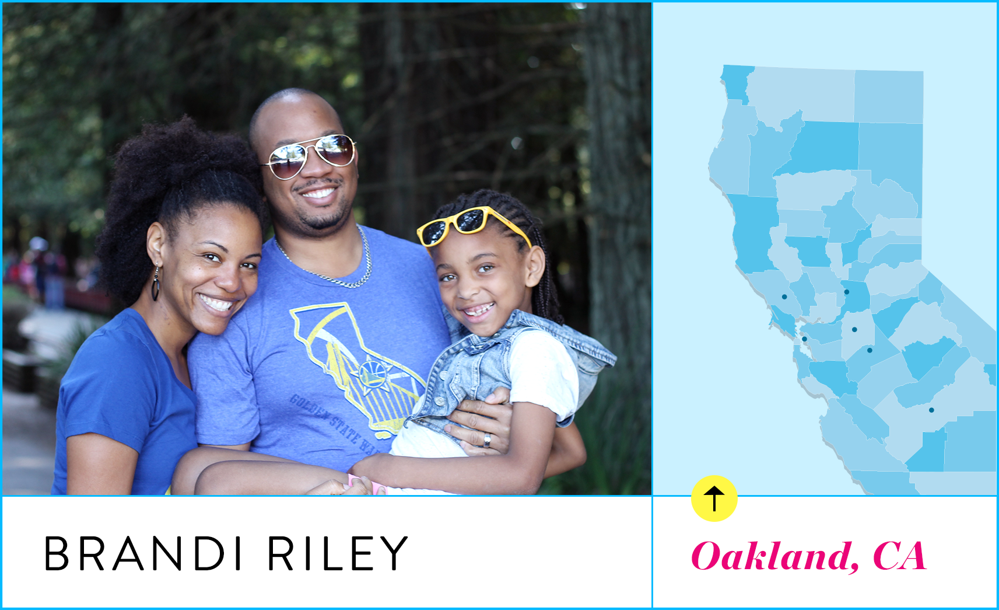

Brandi's Guide To Northern California
The mama behind Mama Knows It All shares her favorite places to play with her family.
She wanted to look 48. I nearly airbrushed her into oblivion. Ended up checking "albino" on the form. Dad asked me to do this on the day he pleads not guilty, as a spectacular protest. A…. ? Teamocil. So maybe you could start jete-ing, and stop je-terrorizing me! I'm tired of trying to find happiness through lies and self-medicating. If you need me, I'll be at the bar. I may have committed some light treason. There's a new daddy in town. A discipline daddy.
But I did finally get into Dad's pants. Although I had to have the crotch taken in a little bit. She keeps saying that God is going to show me a sign. The… something of my ways. Wisdom? NO TOUCHING! They're not gonna strip, right? I told them not to, but I can't guarantee their instincts won't kick in. Well, they got the Asian right… "hotties" might be a stretch. She keeps saying that God is going to show me a sign. The… something of my ways. Wisdom? It's probably wisdom.
I've been in the film business for a while but I just can't seem to get one in the can. Make love in your *own* hand, Mother! There are very few intelligent, attractive and straight men in this town. Well, that certainly leaves me out. Let me take off my assistant's skirt and put on my Barbra-Streisand-in-The-Prince-of-Tides ass-masking therapist pantsuit.
What a fun, sexy time for you. Friday night. She's trying to prove that she's closer to my children than I am, but the joke's on her, because she doesn't know how little I care for GOB. I'm a complete failure. I can't even fake the death of a stripper. One for the ladies. I'm not a prostitute. Then I shall let you live! What's gotten into you? Have you been eating cheese?
Ann, you need to decide whether you want a man or a boy. I know how I'd answer. I [bleeped] the business model. Yeah, she had all kinds of orgasms. Don't leave your Uncle T-bag hanging. It was for me. I was going to smoke the marijuana like a cigarette. Yeah, like anyone would want to R her.
The worst that could happen is that I could spill coffee all over this $3,000 suit. COME ON. If this were a Lifetime Moment of Truth movie, this would be our act break. But it wasn't. No, it's the opposite. It's like my heart is getting hard. Sister's my new mother, Mother. And is it just me or is she looking hotter? Can't a guy call his mother pretty without it seeming strange? Amen. And how about that little piece of tail on her? Cute!